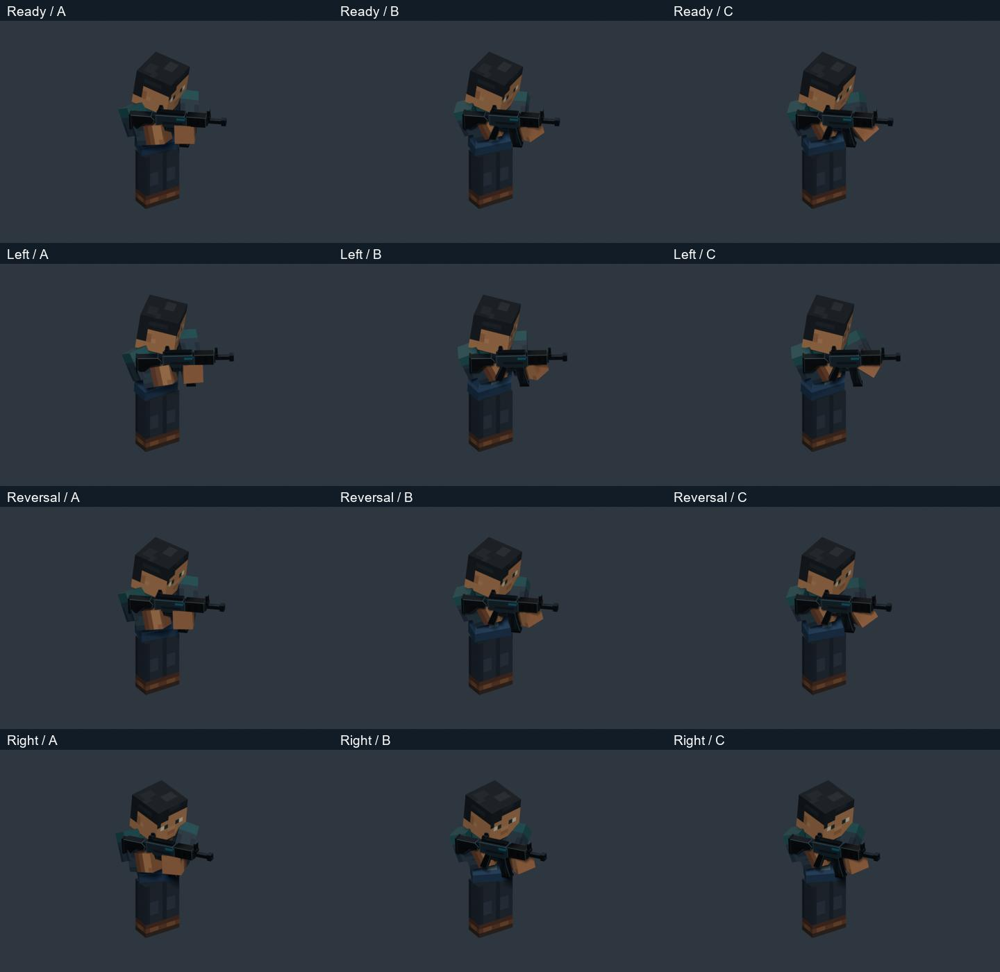
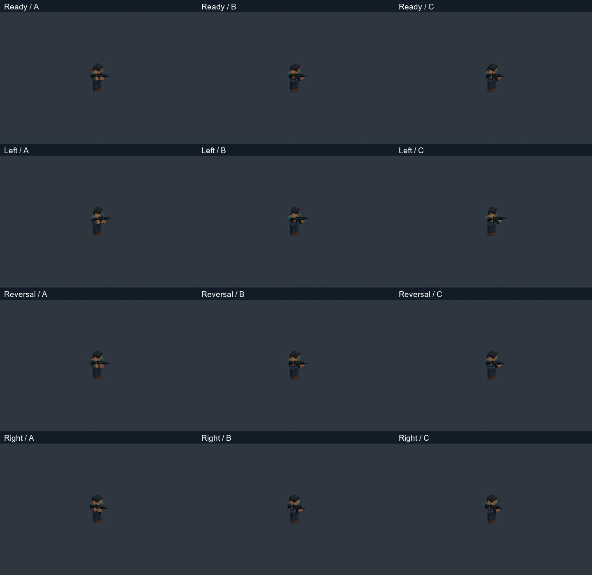
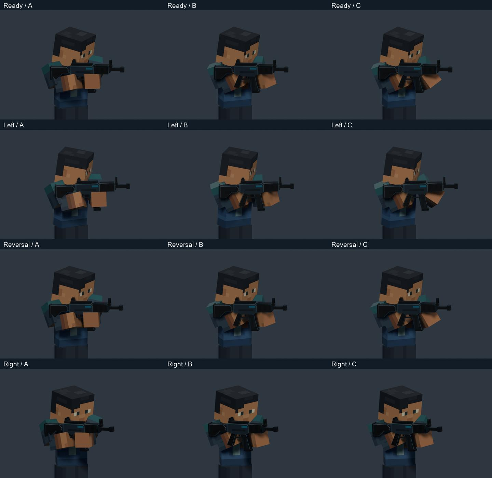
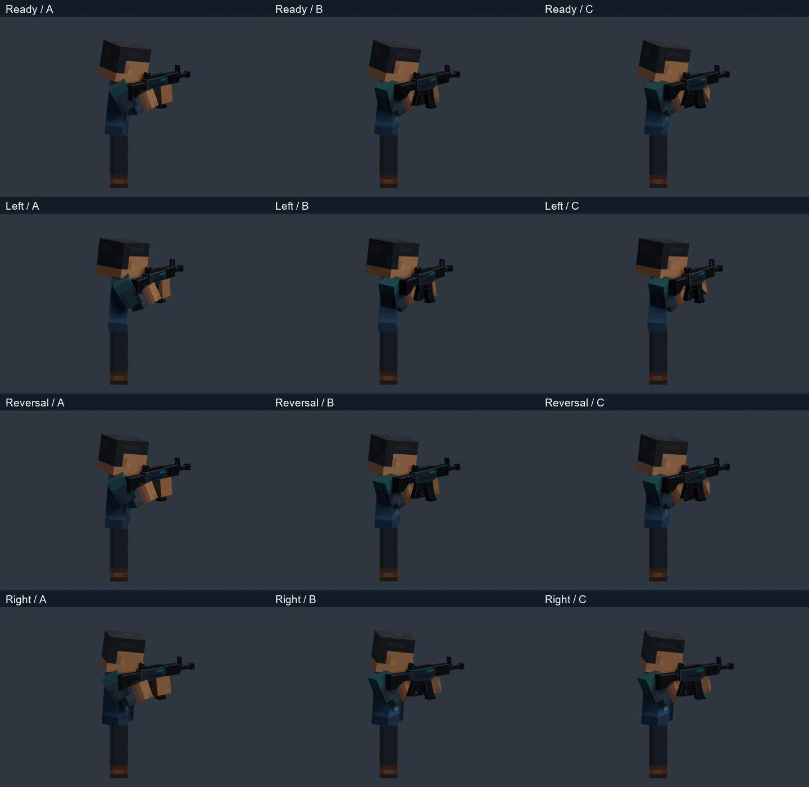
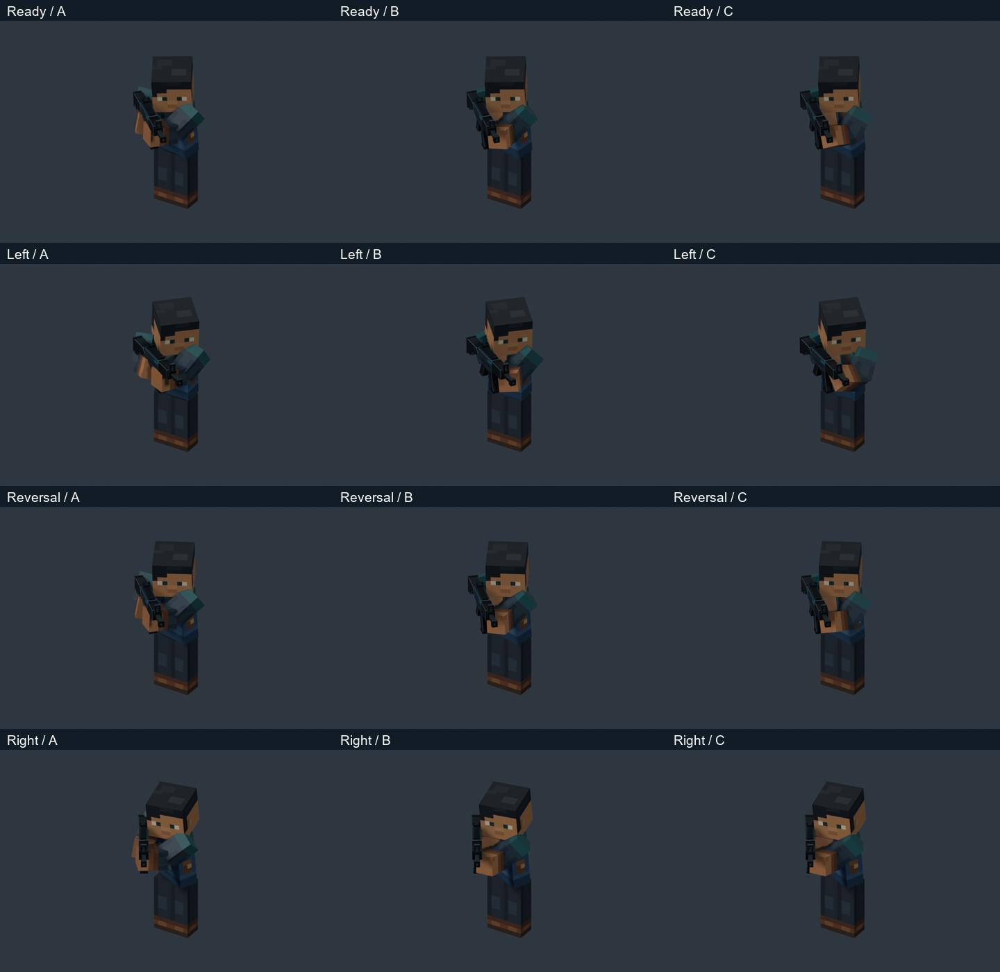
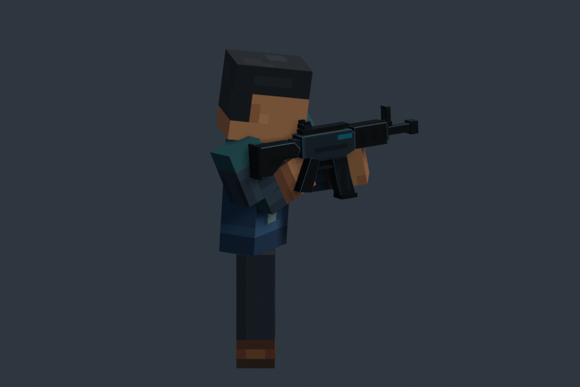
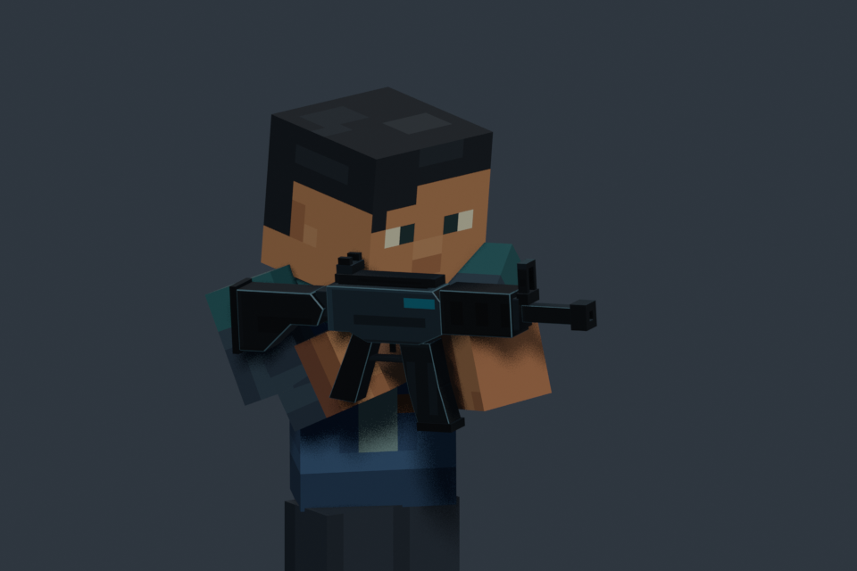
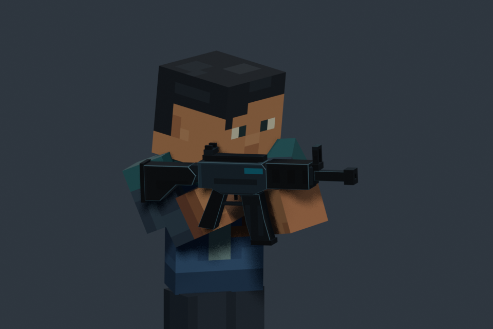
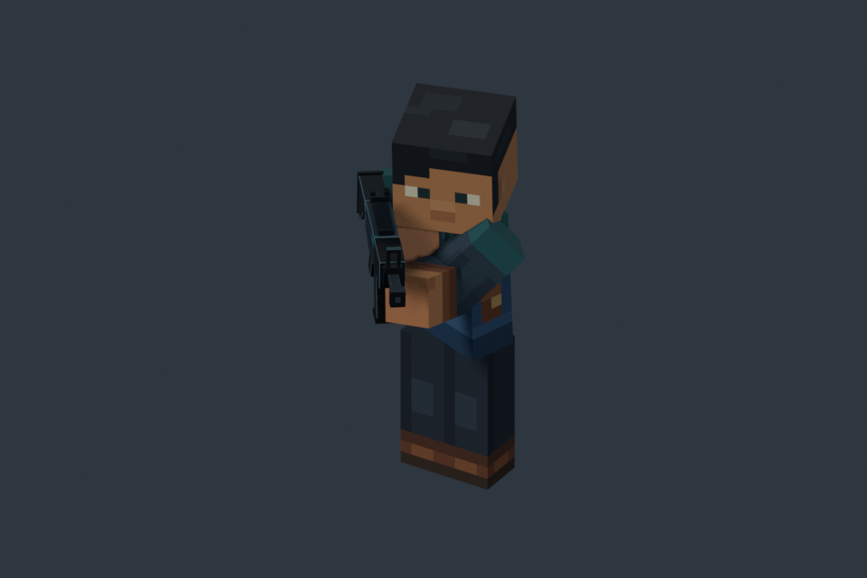

Support-arm readability & contact
A — original W1 · B — corrected contact · C — corrected contact + support response.
Identical framing, timing and lighting within each comparison. V1 is preserved.
Blender study · Full findings · Motion checks · Contact audit
Stationary sweep and continuous reversal
Gameplay comparison first. All three use the same weapon sweep; only the arm treatment differs.
Same sweep over the original Walk
Original Walk cadence; root travel removed equally for upper-body inspection.
Unchanged moving figure-eight
Original 12-second path, speed and Walk phase. Diagnostic path, not measured reference motion.
Living Ready
Shared contact correction, same four-second duration.
Moving Ready
Four original Walk cycles, same 2.667-second duration.
Contact is substantially cleaner; stock overlap remains at frame 191.5 / 7.94s. The elbow reads more clearly in C but remains partly occluded. Ordered-frame inspection and numerical checks do not replace human playback approval.
Gameplay — same camera and scale across A/B/C

Rows: Ready / left-arc sample / reversal / right-arc sample. Columns: A / B / C.
Distance — same camera and scale across A/B/C

Rows: Ready / left-arc sample / reversal / right-arc sample. Columns: A / B / C.
Close — same camera and scale across A/B/C

Rows: Ready / left-arc sample / reversal / right-arc sample. Columns: A / B / C.
Side — same camera and scale across A/B/C

Rows: Ready / left-arc sample / reversal / right-arc sample. Columns: A / B / C.
Opposite — same camera and scale across A/B/C

Rows: Ready / left-arc sample / reversal / right-arc sample. Columns: A / B / C.
Remaining stock contact — frame 191.5 / 7.94s


Residual stock/upper-arm overlap. A zero vertex-depth result on other edges would not establish fully clean geometry.
Support surface — frame 256.5 / 10.65s


Original reference
Existing reference analysis. Camera movement prevents recovery of exact response timing or a world path.